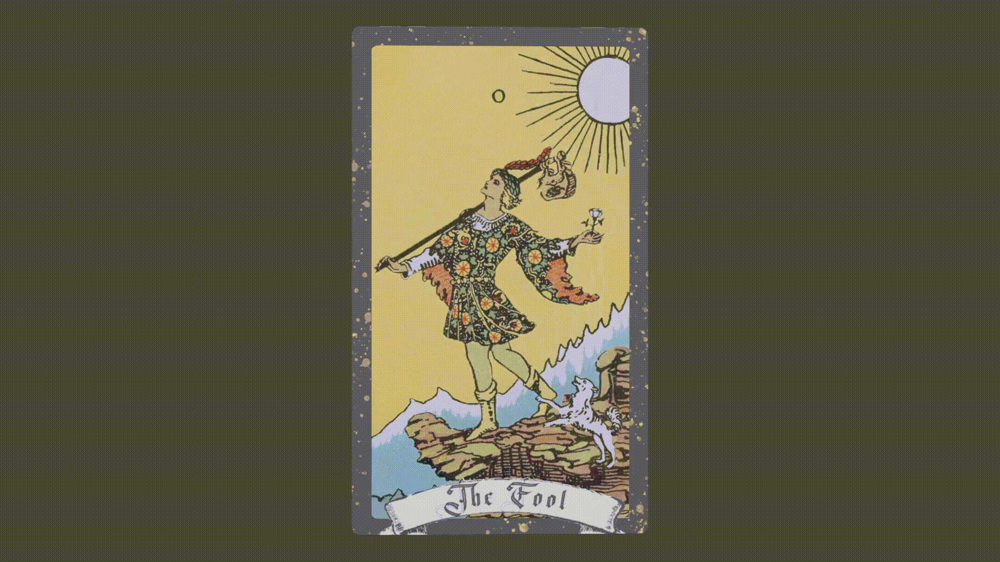

Graphics Final Project

For my final project in Computer Graphics, I created a custom parallax shader in Blender, exploring how shader math could simulate a 3D environment in a tarot card.

When I learned the final presentation needed to be web-based, I quickly rebuilt the project using Three.js to become a non-euclidean broswer experience. This project was the first that ignited my interest in technical art, shaders, and graphics.